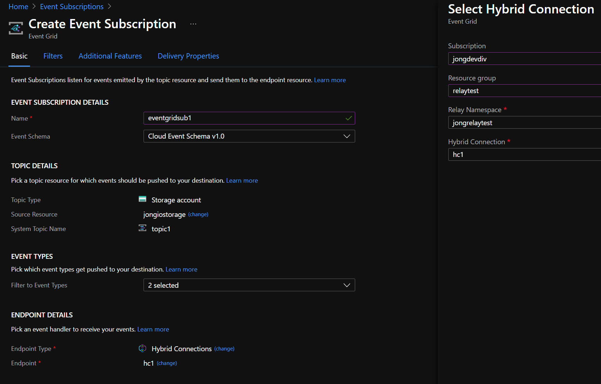
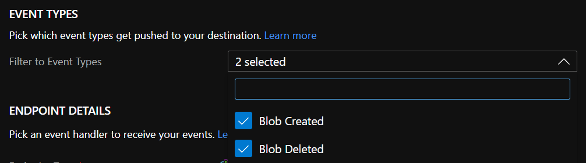

Let’s say that you are developing with Azure Event Grid and you simply want to see the messages that it is generating to observe the schema or debug it. To do so you need to configure an Event Grid handler, which can be a Function, WebHook, Relay, Logic App, Service Bus, etc (the full list is here: Event Grid Handlers, and intercept the message that is sent to it.
In this blog, we’ll take a look at how to use Azure Relay - Hybrid Connections - as an Event Grid handler and print the messages it receives to the console.
NOTE: There are variations of Relay listeners out there, but none (that I could find) for Hybrid Connections, so hopefully this gets you what you need.
Typically Relay is used to expose a service that runs in your corporate network to the public cloud, but it can also be used as a simple Event Grid event listener for debugging purposes.
IMPORTANT: Something to keep in mind is the expense of using Azure Relay for debugging purposes. It’s currently (7/2021) about $10 a month per listener. See the Azure Service Bus pricing page for more info. For debugging purposes, you might just want to spin up a Service Bus listener which is currently $.05/million messages.
A little background/context:
Event Grid publishes events that either happen in Azure called “system topics” - or you can publish your own called “custom topics”. You setup handlers for those events. You can find all the supported handlers here: https://docs.microsoft.com/en-us/azure/event-grid/overview#event-handlers
Azure Relay is one of the supported handlers. Azure Relay handles the event and pushes it to “listeners” that you run on your network.
In our case, our listener will be a simple console app that listens for Relay messages.
Here’s the message flow that we’ll look at:
- Blob Created Event ->
- Event Grid Subscription ->
- Azure Relay ->
- Relay Listener -> Prints message to console.
You will need:
- Azure Storage Account
- Azure Relay
- Event Grid Subscription
- Relay Listener
Azure Resources
- Azure Storage Account
You need to generate an Event Grid event, one of the easiest ways to do that is to create a storage account and then create a blog to generate that event.
Go ahead and create a storage account if you don’t already have one you can use.
See this page for more info: https://docs.microsoft.com/en-us/azure/storage/common/storage-account-create?tabs=azure-portal
- Azure Relay
You’ll use Azure Relay to receive the Event Grid events.
See this page to create an Azure Relay Namespace and Hybrid Connection:
https://docs.microsoft.com/en-us/azure/azure-relay/relay-hybrid-connections-http-requests-dotnet-get-started
- Azure Event Grid Subscription
You’ll need an Event Grid subscription to tell Event Grid to send events from Blob Storage to Relay.
Here’s a screenshot of how I have my subscription configured.

Here are the event types:

Relay Listener
This is the console app that you run that listens for Relay events. It’s actually a sample from the page listed above, but with my added code of printing the Request headers and body to the console for each event.
git clone https://github.com/azure/azure-relay
Open a terminal and navigate to /samples/hybrid-connections/dotnet/simple-http/Server
Run:
dotnet run [relay-namespace].servicebus.windows.net [hybrid-connection-name] RootManageSharedAccessKey [key]
The relay-namespace/hybrid-connection-name is what you named your namespace/connection earlier. key is the key you can get from the namespace in the portal.
That will start the listener and you’ll see this output.
Online
Server listening
Create and View Event
Create a blob in the storage account you created earlier and you’ll see a message printed to the console like this:
=====HEADERS=====
WebHook-Request-Origin: eventgrid.azure.net
aeg-subscription-name: JONGEVENTSUB1
aeg-delivery-count: 0
aeg-data-version:
aeg-metadata-version: 1
aeg-event-type: Notification
Content-Type: application/cloudevents+json; charset=utf-8
Accept-Encoding: gzip, deflate
Host: jongrelaytest.servicebus.windows.net
Via: 1.1 jongrelaytest.servicebus.windows.net
=====BODY=====
{"id":"28e1ada3-701e-0029-4590-729d6d06b7ee","source":"/subscriptions//resourceGroups/jongio/providers/Microsoft.Storage/storageAccounts/jongiostorage","specversion":"1.0","type":"Microsoft.Storage.BlobCreated","dataschema":"#","subject":"/blobServices/default/containers/container/blobs/jongblob1.txt","time":"2021-07-06T17:55:23.2904438Z","data":{"api":"PutBlob","clientRequestId":"97197e51-c6f6-4f94-5ee0-bff852460cb3","requestId":"28e1ada3-701e-0029-4590-729d6d000000","eTag":"0x8D940A73A62C8F6","contentType":"text/p
As always, let me know if you run into any issues.
Hopefully this helps you dev with Event Grid.
Jon